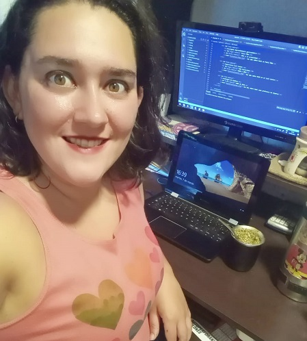

En mi proyecto actual en RL Solutions, me estoy enfocado en el análisis del nicho de mercado, la identificación de potenciales clientes y la investigación de los competidores en el sector.
Para ello, he llevado a cabo un análisis exhaustivo del mercado para comprender las tendencias y necesidades de los clientes, así como para identificar oportunidades para el crecimiento del negocio. A través de este análisis, soy capaz de identificar nuevos segmentos de clientes potenciales y desarrollar estrategias para llegar a ellos de manera efectiva.
Una de las principales estrategias que he implementado es la planificación y creación de contenido para las redes sociales y/o sitios web. A través de la creación de contenido atractivo y relevante, aumentando la presencia en línea de RL Solutions.Además, llevo a cabo una evaluación constante de las estadísticas y puntos de superación en lo relacionado a la web y las redes sociales. Esto me ha permitido identificar oportunidades de mejora. A partir de esta evaluación, he desarrollado planes de acción para mejorar y la presencia en línea.
En resumen, en mi proyecto actual en RL Solutions he estado enfocado en el análisis del nicho, la planificación y creación de contenido para las redes sociales y/o sitios web, y la evaluación constante de estadísticas y puntos de superación. Creo que estas habilidades y experiencias son fundamentales para cualquier negocio que desee tener una presencia en línea efectiva y satisfacer las necesidades de sus clientes.
.png)